Group Assignment 2: Shape Google (100 Points)
By Chris Tralie
Click here to see the classification contest results!
- Overview
- Codebase / Shape Database
- Features
- Mean-Center / RMS Normalize Point Clouds (6 Points)
- Shell Histograms (6 Points)
- Shell Histograms + Sorted Sectors (10 Points)
- Shell Histograms + PCA Eigenvalues (8 Points)
- D2 Distance Histogram (10 Points)
- A3 Angle Histogram (10 Points)
- Extended Gaussian Image (10 Points)
- Spin Images (20 Points)
- Spherical Harmonic Magnitudes (25 Points)
- Histogram Comparison
- Performance Evaluation
- Classification Contest
Overview
Now that you have had some practice with Numpy in the ICP alignment assignment, it is time to apply those skills to another statistical task of automatically classifying shapes. Groups will implement a variety of shape descriptor histograms that are applied to a database of point clouds, and they will test the ability of these shape descriptors to group similar shapes together and to separate shapes that are different.
This assignment will be due on Wednesday 3/30 at 11:55PM. As before, groups of 2 have to earn 100 points, and groups of 3 have to earn 120 points. There will be no extra credit on this assignment; scores will be capped at 100% this time (unless you win the classification contest). And as before, the tasks marked in blue. This time, points will be deducted from 100 for any mistakes on the bold tasks, regardless of the amount of extra tasks you have done, so be sure to treat them carefully. Otherwise, the grading will not be as strict as it was on Mini Assignment 3, but you should use numpy multiplications, broadcasting, and selection wherever you can to keep things running quickly.
Also, student answers on Piazza are strongly encouraged, and more raffle points will be given out during this assignment to promote students who help each other.
- This assignment was inspired by Princeton COS 429 Fall 2009, Computer Vision, Assignment 3.
Codebase / Shape Database
Code Layout
Click here to download all of the code and the mesh database for this assignment
For all of the tasks in this assignment, you will be editing a python file calledShapeStatistics.py. As long as you installed the scipy stack in Mini Assignment 3, you should be good to go software wise. Make sure you are able to use Matplotlib, though, as you will need that in the performance evaluation.
Shape Database / Point Cloud Viewer
The shape database on which you will be testing classification techniques consists of a set of 200 shapes in 20 different classes, 10 for each class. The meshes can be found in the directorymodels_off. The main method in ShapeStatistics.py is setup to load all meshes, but you should start out making sure your descriptors work on one mesh at a time.For your information, you can also view the result of sampling the meshes in a point cloud viewer generated for this assignment. For example, if you run the code It will generate a file biplane.pts with 20000 points and their estimated normals, and when you load it in PCViewer.html, you should see something like this:
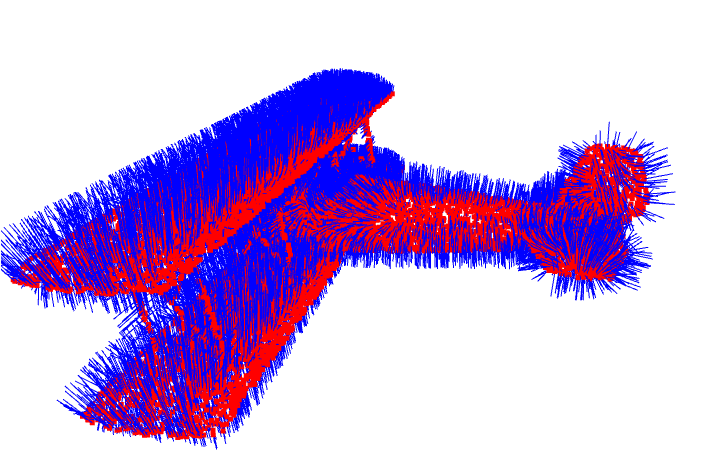
Uniform Sphere Sampling
A method calledgetSphereSamples(res) has been provided that samples points uniformly on the sphere. This is useful in shells + sectors and extended Gaussian image descriptors, for example. The parameter res is used to control the resolution of the sampled sphere, and increasing it by one increases the number of samples roughly by a factor of 4.
res = 2: 66 Points | res = 3: 258 Points | res = 4: 1026 Points |
| 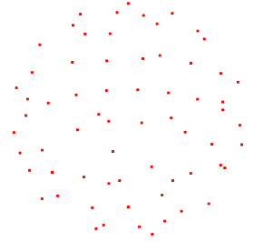 | 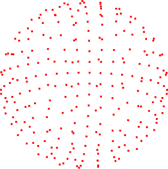 | 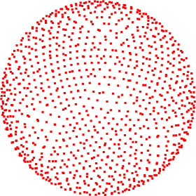 |
Features
Mean-Center / RMS Normalize Point Clouds (6 Points)
- Fill in the function
samplePointCloud(mesh, N)
\[ \sqrt{ \frac{1}{N} \sum_{i=1}^N ||sx_i||^2 } = 1 \]
Shell Histograms (6 Points)
- Fill in the function
getShapeHistogram(Ps, NShells, RMax)
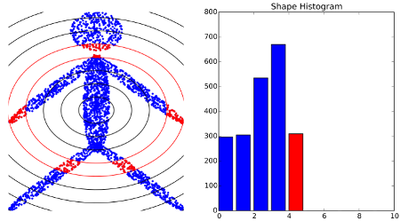
- The command
numpy.linspacemay be helpful to evenly space your bin radii
Shell Histograms + Sorted Sectors (10 Points)
- Fill in the function
getShapeShellHistogram(Ps, Ns, NShells, RMax, SPoints)
But you will have to do them in 3D. There has been a function provided which samples points uniformly on the unit sphere. Thinking of each point as a direction, take the dot product of every point in the point cloud with each point on the sphere, and bin each point to the sphere direction that has the largest dot product.
- The command numpy.sort may come in handy here
- In numpy, you can select a subset of an array that satisfies a boolean condition. For instance This might be useful for selecting points in shells before you bin them to different directions of the sphere
Shell Histograms + PCA Eigenvalues (8 Points)
- Fill in the function
getShapeHistogramPCA(Ps, Ns, NShells, RMax)
- It might be useful to fill in the helper function
doPCA(X).
D2 Distance Histogram (10 Points)
- Fill in the function
getD2Histogram(Ps, Ns, DMax, NBins, NSamples)
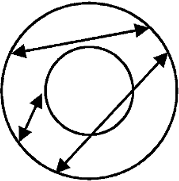
(courtsey of Osada2002)
- The command numpy.random.random_integers might help you with randomly sampling
- The command numpy.histogram may come in handy here
A3 Angle Histogram (10 Points)
- Fill in the function
getA3Histogram(Ps, Ns, NBins, NSamples)
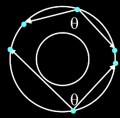
Angles should be distributed between 0 and PI.
- Use the command numpy.arccos after computing a normalized dot product
Extended Gaussian Image (10 Points)
- Fill in the function
getEGIHistogram(Ps, Ns, NShells, SPoints)
Spin Images (20 Points)
- Fill in the function
getSpinImage(Ps, Ns, NAngles, Extent, Dim)
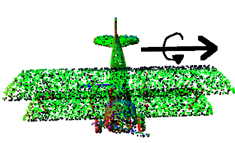
Since the wings are quite wide and hold a lot of points, the direction of greatest variance is along the wings, so that's the axis around which we will be rotating. The point of rotation at the centroid is also around the wings. The image below shows an example state of the projected points as they are spinning, and their corresponding histogram image binning:
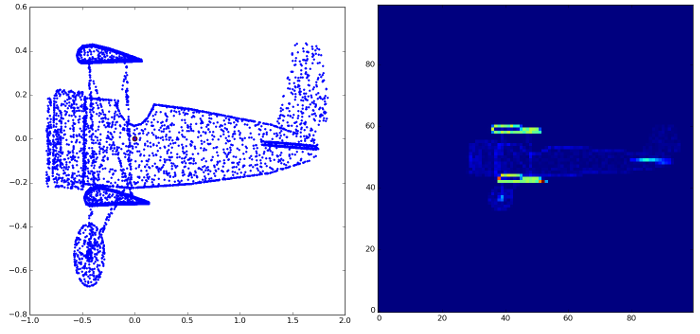
And here is the final spin image after rotating that around 360 degrees and summing all such images:
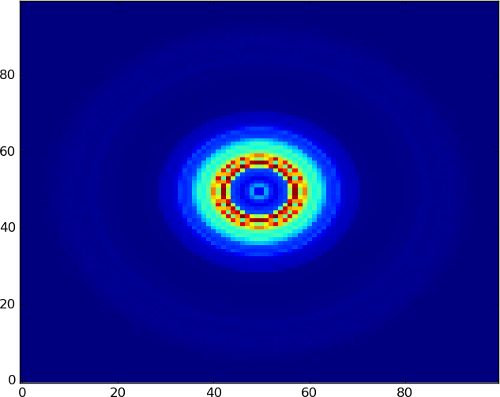
- The command numpy.histogram2d should come in handy here
- Make sure you're rotating around the direction of greatest variation.
numpy.linalg.eighreturns the smallest eigenvalues first, but you want the largest one first.
Spherical Harmonic Magnitudes (25 Points)
- Fill in the function
getSphericalHarmonicMagnitudes(Ps, Ns, VoxelRes, Extent, NHarmonics, NSpheres)
scipy.special.sph_harm returns complex numbers, and you will need to take their magnitude to make this descriptor rotation invariant, as explained in class.
- The function numpy.histogramdd may come in handy here for creating a voxel grid of your point cloud, but note that you actually want a binary image, so all you care about is whether a voxel is occupied by at least one point or not
Histogram Comparison
For full credit, if you implement one of the alternative metrics beyond Euclidean distance, you should submit an average precision recall graph showing the difference in performance of all of the distance metrics you implemented on at least two of the above features: one plot for feature. For instance, you could show a precision recall graph for D2 histograms with all of your distance metrics, and you could show one for spin images with all of your histograms. Note that 1D Earth mover's is only expected to work well for the 1D histograms (basic shells, D2, A3).Be sure to normalize each histogram h so that
\[ \sum_{i=1}^K h[k] = 1 \]
where K is the number of bins in the histogramEuclidean Distance (5 Points)
- Fill in the function
compareHistsEuclidean(AllHists)
\[ D_{ij} = ||\vec{x_i} - \vec{x_j}|| \]
- You can use a trick very similar to the broadcasting trick you played on mini assignment 3 for the brute force nearest neighbor correspondences
Cosine Distance (5 Points)
- Fill in the function
compareHistsCosine(AllHists)
\[ D_{ij} = \frac{ \vec{v_i} \cdot \vec{v_j}}{||\vec{v_i}|| ||\vec{v_j}||} \]
Chi Squared Distance (5 Points)
- Fill in the function
compareHistsChiSquared(AllHists)
\[ D_{ij} = \frac{1}{2} \sum_{k = 1}^K \frac{ (h_1[k] - h_2[k])^2}{ h_1[k] + h_2[k] }\]
1D Earth Mover's Distance (10 Points)
- Fill in the function
compareHistsEMD1D(AllHists)
\[ h^C[k] = \sum_{i = 0}^k h[i] \]
Then the Earth Mover's Distance between two histograms h1 and h2\[ D_{ij} = \sum_{k = 1}^K |h^C_i[k] - h^C_j[k]| \]
Note that this only makes sense for 1D histograms, so it wouldn't work for Shells + Sectors, EGI, Spin Images, or Spherical Harmonics (you would have to do something fancier by defining distances in a linear program). But 1D earth mover's should at least theoretically be better than Euclidean for things like D2, A3, and ordinary shape histograms.Performance Evaluation
Precision Recall Graphs / Experiments (25 Points)
- Fill in the function
getPrecisionRecall(D, NPerClass = 10)
- For each shape i look at the ith row of D to get all similarity scores to all other shapes in the database, and sort the entries in increasing order (the command numpy.argsort may come in handy here).
NOTE: For cosine distance you will have to sort (1-cosine distance), since cosine distance is 1 for most similar and -1 for least similar, and you want similar shapes to come first in the sorted list -
Now walk through every entry in the sorted row. Every time you encounter another shape that's in the same class, make an entry for the next recall value, and record the precision, which is the fraction of shapes in the correct class over the fraction of shapes you've looked at so far. For instance, if the third shape in a group of 9 that you're looking for is at position 5 in the sorted list (excluding the query shape), your recall will be 3/9, and your precision will be 3/5
Be sure not to include the query shape itself in the calculation. You're only comparing it to the 9 other shapes in its class. - Repeat steps 1 and 2 for every shape in the database, and average all of the results together.
See Figure 19 of this paper for an example of precision recall graphs. Also, below is an example that I generated in this codebase:
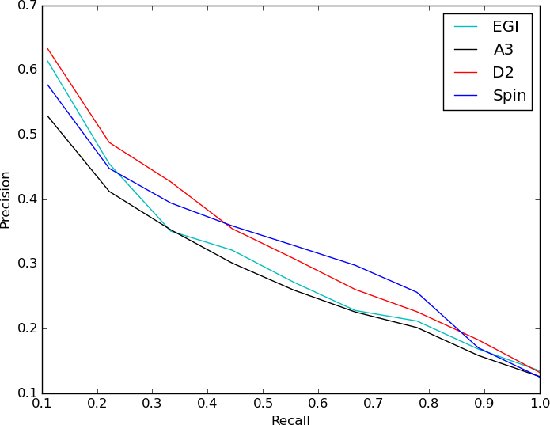
Don't worry too much if your curves don't look exactly like that. I just wanted to give a ballpark for how they should look. They can vary quite a bit depending on the parameters you choose for the number of points to sample, number of distances to sample, number of bins, etc, as well as the method of comparing histograms (I just used straight Euclidean in this example), and you should play around with that in the section. For your reference, the code I used to generate that plot is as follows:
To get full credit on this section, you need to run the following experiments and generate precision recall graphs
- Create precision recall graphs comparing every descriptor you implemented with reasonable parameter choices for each one. Also, plot against the case of a set of random histograms for comparison. With your README file, make some general observations about which ones seem to perform better and why you think that might be the case
- Create precision recall graphs which show the effect of choosing different numbers of bins for the basic shell histogram
- Create precision recall graphs which show the effect of choosing different numbers of random samples for the D2 histogram
- If you've implemented any of the alternative histogram distance metrics, make at least two precision recall graphs using different metrics on the same descriptor and showing the effect (see above in histogram section)
- At least one other precision recall graph (for instance, if you implemented the extended Gaussian Image, how does the number of sphere sampled normal directions affect the results?)
Classification Contest
Classification Contest Submission (5 -20 Points)
- Fill in the function
getMyShapeDistances(PointClouds, Normals)
We will be running a point cloud classification competition as part of this assignment. If you submit an entry, your code will be run on a previously unseen database of shapes, and classification statistics will be computed running your code on this database with a leave-one-out technique averaged over all shapes. 5 points for any submission whatsoever, and the winner gets 20 points. The results will be summarized on the course web page, so please come up with a group name to put next to your algorithm
Your job for this classification task is to come up with the best features you can and to use them to compute distances between every pair of point clouds. Note that there is a lot of work in machine learning on fusing classification algorithms, but your job here is to come up with the best D matrix you can comparing point clouds, and that D matrix will be fed to a fixed classification algorithm.
When designing a submission, feel free to use any of the histograms and histogram comparison techniques you implemented as part of this assignment, with the best parameters you found. Or feel free to use some weighted combination of different histograms, or even an entirely new histogram I didn't mention in class (http://www.pointclouds.org may give you some inspiration). If you found that sampling more or fewer than 10,000 points in each point cloud was advantageous, indicate that in your submission, and I will be sure to run your code with that number of random samples.
Scoring
If you happen to win the point cloud classification contest, then 15 points will be added to your final score no matter what (any submission gets 5 points but the winner gets 20 points, so that's a difference of 15). So let's say you're a group of 3 and you earn 110 points, which gets scaled down to 92/100, but then you win the contest. Your final score will then be 92 + 15 / 100 = 107 / 100.- This contest was inspired by MIREX, and particularly by the Audio Cover Song Classification task, which I participated in last year with a new music descriptor I made.